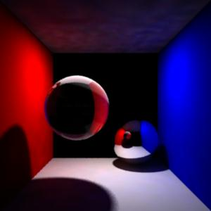
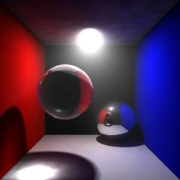

Photon Shaders
This section
shows the basic workflow for mental ray photon shaders in Maya.
Photon shader takes
care of how the material interacts with photons - how the surface reflects,
transmits and absorbs photons. If the surface has a diffuse component, the
photon shader will store photons.
This section shows how to use photon shaders with global illumination and
caustics. We will take the plain Cornell box scene with material shaders
and a light shader, and add global illumination, caustics and finally
volume caustics.
References:
mental ray User Manual. Chapter 3.15
mental ray Shaders Guide. Chapter 2.4
Rendering with mental ray. Chapter 7, Appendix D.
Where to find photon shaders
Material shaders appear in the Hypershade > Create mental ray Nodes >
Photonic Materials.
The following photon shaders are shipped with Maya:
- dgs_material_photon
- dielectric_material_photon
- mib_photon_basic
- parti_volume_photon
- transmat_photon
Default behavior
The proper connection for a photon shader is from
photonShader.message to shadingEngine.miPhotonShader.
Ctrl+drag from a photon shader to a shading engine will make
the above connection.
Step 1. Getting Ready
Make sure the mental ray for Maya plug-in is
loaded.
- Windows > Settings/Preferences >
Plug-in Manager...
- Find Mayatomr and check loaded
Open cornellBox_photon_start.ma.
|

|
|
cornellBox_photon_start.ma
|
The Cornell box scene was used in material shaders, light shaders, volume
shaders.
Note that a physical_light is attached to the lightShape node to provide
physically accurate lighting with inverse-square distance falloff.
It is important to use physically correct
light and material shader, photon shader to prevent the scene from flooding
with energy.
This scene uses material shaders from
physics.so package for this reason.
Another small change to notice is that the transmatSG now has a shadow
shader transmat2, which will pass through any shadow and light rays.
This connection was made to prevent the
light cover from casting a shadow to the whole scene.
Step 2. Create photon shaders
- transmatSG :
light cover, front wall, back wall.
We want the light cover, front wall and the back wall be invisible,
and not participate in photon tracing, transmat_photon is just perfect
for this case. The purpose of the invisible transmatSG is to create a volume caustics later.
- Create
a dgs_material_photon shader for the red wall
- From Hypershade > Create mental ray
Nodes > Photonic Materials
- Select dgs_material_photon.
- Rename it red_phot. This photon shader will
be used for the red wall.
- Most of the time, you want the photon shader
and the material shader have the same parameter values.
Because the red wall uses dgs_material as its material shader, we use
dgs_material_photon as its photon shader.
- Connect
red_phot to redSG .
- CTRL+MMB red_phot to redSG.
- Set the photon shader parameter values same
as the material shader.
- Do the same for whiteSG which is shared by the
floor and the ceiling.
Step 3. Using Map Visualizer
Let's render and see what we have.
Before rendering, make sure that the global illumination is on.
- Turn on
global illumination.
- Go to the mental ray render globals, mental
ray tab. Open "Caustics and Global Illumination" section.
Check "Global Illumination".
- The two parameters below the check box is
used to fine tune the scene, decrease the noise, etc. We can use the
default values for this example.
- Make the light emit
photons
- From the attribute editor of the light
shape, open "mental ray" section.
- Check "Emit Photons" under
"Caustics and Global Illumination".
- Make sure that "exponent" is set to
2, so that the energy of each photon decreases correctly as it
travels around the room.
Now we are ready to render, but let's do one
more extra step:
- Go back to the mental ray render globals,
mental ray tab, Caustics and Global Illumination.
- At the bottom of this section, turn on
"Photon Map Rebuild" so that mental ray creates new photon
map.
- Provide a file name to "Photon Map
File" edit box to be written out to a disk.
Finally, render.
The rendering takes longer with global
illumination.
It's usually a good idea to turn up the
verbosity, so that the output window shows the progress.
The verbosity is controlled from mental ray Render
Globals > mental ray tab > Translation.
It is set to Progress Messages in this
example, so that you can check photon emission progress.
You should notice red tint on the ceiling
and faint pink on the floor, caused by photons reflected by the red wall.
The ceiling rendered black without global
illumination before, because the light did not hit the ceiling directly.
The color showing up on the ceiling is
solely from the photons.
Surfaces without photon shader did not participate in this process at all.
For example, the blue wall did not affect the color of the ceiling at all.
To see the global illumination effect more clearly, set
the color of physical_light1 black .
This disables the direct illumination.
Render, and you will see
the effect of global illumination more clearly.
Set
the physical_light1.color back
There is another way of checking the photon
map process.
Because we specified the photon map file name,
the file is now stored in the disk. A Map Visualizer provides a convenient
way of diagnosing the photon map.
The Map Visualizer is accessible from Menu > Window > Rendering
Editors > mental ray > Map Visualizer.
For the Map File Name, select the photon map file just created. It should
be in the photonMap directory.
The photon map is displayed in the model view if the shading mode is
Wireframe or Smooth Shade All.
As you may see, photons are only stored on
the ceiling, floor and the red wall - only on the surfaces with a photon
shader.
Delete the Map Visualizer by the button in the middle and quit.
Step 4. Finishing up
Assign photon shaders for the rest of the
materials.
- Blue
wall
Assign a new dgs_material_photon, rename it to blue_phot, and set the
same values as its material shader.
- Mirror
ball
Assign a new dgs_material_photon, rename it to mirror_phot, and set
the same values as its material shader.
- Glass
ball
Assign a new dielectric_material_photon, rename it to glass_phot, and
set the same values as its material shader.
Render
again, and this time, both the red wall and the blue wall affected the
image.
Following settings can be adjusted to fine-tune
the image and performance.
- Number of photons emitted (from a light)
- Global Illum Accuracy (render global / shape
node)
- Global Illum Radius (render global / shape
node)
- Globalillum flag (transform node. Mostly for
performance)
Photons are stored only if a surface has a
photon shader, and a diffuse component.
For example, if the surface is specular like
those balls in the scene, photons reflect and transmit on the surface if
they have a photon shader, but won't be stored.
You can double check this from the Map
Visualizer.
|

|
|
Global
illumination
cornellBox_photon_globillum.ma
|
The scene is saved as cornellBox_photon_globillum.ma
Step 5. Caustics
Caustics and global illumination are handled
separately in mental ray, even though caustics are a subset of global
illumination.
Global illumination is mostly for diffuse light interaction, and caustics
is dedicated to localized effect from specular light interactions.
Caustics are created by specular reflection or transmission of
photons onto diffuse surface or volumes.
In the Cornell box scene, we can expect caustics from the glass ball -
photons from the light transmitted through the glass ball, and focused on
the diffuse floor.
The mirror ball also creates caustics by reflecting the photons, but it is
hard to see because the reflection is not focused on a localized area.
The scene is almost set up for caustics. Specular objects (two
spheres) as well as diffuse walls have proper photon shaders.
The light emits photons, and the number of caustics photons is reasonable.
The only thing left is to turn on Caustics from
the mental ray render globals > mental ray tab > Caustics and Global
Illumination.
Render
again, and this time, we see the caustics on the floor.
Check the photon map from the Map Visualizer. You can select
to see global illumination photons only, caustics photons only, or both.
Volume photons will be used later.
To adjust the quality of the caustics, use:
- Number of caustics photons emitted (from a
light)
- Caustics Accuracy (render global / shape
node)
- Caustics Radius (render global / shape node)
- Caustics Filter Type (render global)
- Caustics Filter Kernel (render global)
- Caustics flag (transform node)
The scene is saved as cornellBox_photon_finish.ma
|

|
|
Global
illumination and Caustics.
cornellBox_photon_finish.ma
|
Step 5. Volume Caustics
Now we are going to add some atmospheric to the scene, and
create a volume caustics effect.
Caustics photons transmitting through the floating glass ball
will create a prum on its way out.
If you are not familiar with volume shader, check out volumeShaders first, to get familiar with how
volume effect is created.
Volume caustics as well as other participating media effect can be
simulated using photon volume shader. A photon volume shader is similar to
a volume shader, except that it is applied to the volume, and stores
photons in the volume.
We will use a photon volume shader parti_volume_photon which
is a counterpart to parti_volume volume shader.
Let's define the bounding box for the volume first.
You might have guessed, the transparent surfaces - front wall, back wall
and the light cover plays important role.
The front wall and the back wall define the bounding planes for the volume
effect.
- Assign
a volume shader to transmatSG .
- Create a parti_volume shader from Hypershade
> Create mental ray Nodes > Volumetric Materials.
- Rename it transmat_volume.
- Connect transmat_volume to transmatSG.
transmat_volume.message to transmatSG.miVolumeShader
- Adjust volume shader settings.
Let's use the following settings. (mental ray
Shaders Guide, Chapter 2.5 Participating Media, explains each
parameter.)
- Render
and you can see the volume effect, especially around the light.
- The scene is saved as
cornellBox_photon_volume.ma
|

|
|
Global
Illumination in Volumes.
cornellBox_photon_volume.ma
|
- Add photon volume shader.
Let's add a photon volume shader to transmatSG.
The light cover has been waiting for this moment.
The photon volume shader is why the light cover exists.
We could have assigned a photon volume shader to the whole scene, but
it would have caused the loss of many photons.
By adding a photon volume shader to a light cover - a small object
that covers a light, we give a hint to mental ray where we want
photons be emitted.
Volume photons are stored in the light frustum that the light cover
defines.
- Assign
a parti_volume_photon to the light cover .
- Create a parti_volume_photon from Hypershade
> Create mental ray Nodes > Photonic Materials.
- Rename it as transmat_volume_phot
- Connect transmat_volume_phot to transmatSG.
From transmat_volume_phot.message to transmatSG.miPhotonVolumeShader.
- Adjust the settings
As we use the same settings for material
shader and photon shader, same rule applies to volume shader and
photon volume shader.
Render .
Volume caustics effect shows up below the
glass ball.
The final scene is
cornellBox_photon_volume_caustics.ma
|

|
|
Volume
Caustics.
cornellBox_photon_volume_caustics.ma
|
|